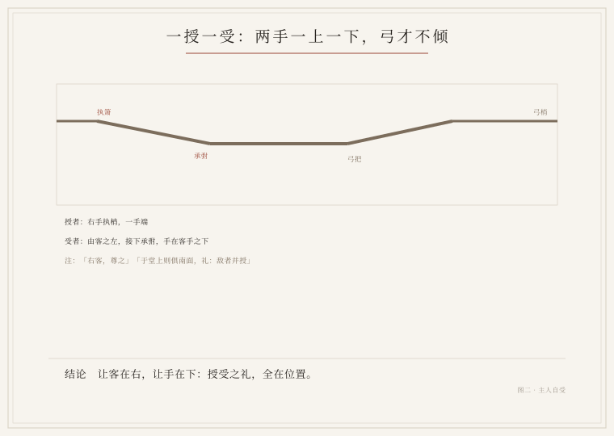

曲礼上 · 一·九十一 · 第 89 课
上节讲客如何递弓；此节讲主人如何接：从客的左方接手，接住客手下方的弓把；若在堂上，主客并立同向，然后受。
说什么事：主人自受，由客之左，接下承弣；乡与客并，然后受。
落在哪一层：仪。受者之礼，与授者对称。
为何编在此位：紧承遗弓一节，一授一受，合为一事。
【经】主人自受，由客之左，接下承弣；鄉與客並，然後受。
【注】由，從也。從客之左，右客，尊之。接下，接客手下也。承弣卻手，則簫覆手與？於堂上則俱南面，禮：敵者並授。
自受 主人不使人代受，亲受。疏「主人自受」，与上文「客还辟」相承：一辞一受。
由客之左 注「由，从也。从客之左，右客，尊之」。取客之左方，是把客置于己右——右为尊。
接下 注「接下，接客手下也」。手从客手之下承之，不压其上。
承弣 注「承弣却手，则箫覆手与？」却手，手背向下；承弣，托住弓把。
乡与客并 乡，向也。注「于堂上则俱南面」。主客同向而立。
敌者并授 注。位相敌则并授，不相悬则不必一上一下。
主人亲自接受：从客人左方接手，接在客人手的下方托住弓把；在堂上则与客人同向并立，然后受弓。
一节讲一个「接」的姿态。授者执梢而托把，受者从下方承把——两只手一上一下，弓才不倾。主客之位也随之定：客在右，主在左，同向而立。
第一层 自受 主人亲受，是重其事。赠弓非小事，托人代接则轻。
第二层 由客之左 注「右客，尊之」。礼以右为尊，取客之左，就是把尊位让给客。
第三层 接下 接客手之下，是与客手相接而不压。礼有「授受不亲」之说，此处以承托代握持，正为其节。
第四层 并授 注「敌者并授」。位相敌则并立同向而授受；若位相悬，则有上下之别。此节所记，是敌者之仪。
与今日何干 双手接物，手在对方手的下方；递收之间不让对方仰手。此节之今形，仍在日常。
| 左 | 右 |
|---|---|
| 主人自受 | 亲受，不使人代 |
| 由客之左 | 取客左方，置客于右，尊之 |
| 接下 | 接客手之下，不压其上 |
| 承弣 | 托住弓把之中 |
| 乡与客并 | 堂上与客同向并立 |
| 敌者并授 | 位相敌则并授，无上下之别 |
画两手持弓之局部：上方一手执弓梢、手背朝上；下方一手从下方托住弓把、手背朝下，两手之间弓身平直不倾。背景为堂上地面，两足并立、足尖同向。不画人面、不写文字。赭色只在弓弭一处。
